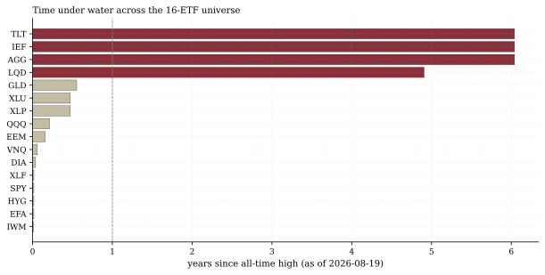
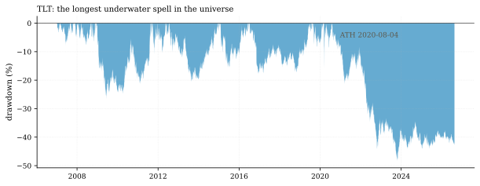
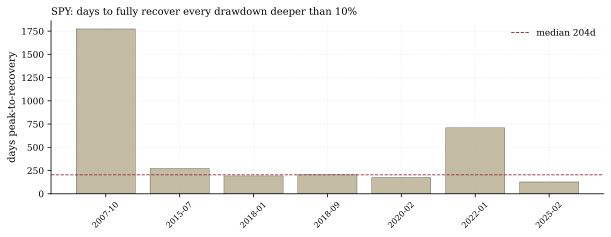

The one-paragraph version. As of Aug 19, the bond complex has been under water for 6.04 years — AGG, IEF, and TLT are tied at exactly 2,206 calendar days below their shared 2020-08-04 peak, and none has reclaimed it; TLT sits 41.6% below its peak, the deepest reading in the universe. Meanwhile not one of the sixteen assets closed within 0.1% of its all-time high — SPY is 1.13% below its Aug-13 record (6 days under), QQQ has been under water for 78 days since June 2, and gold is 16.6% below its January peak. History says recovery is slow: SPY's median full recovery from a 10%+ drawdown takes 204 days, gold's takes 548, and the universe-wide median is 468.5 — right in the neighborhood of the 517-day recovery floor our own feasibility work documented (docs/TOP_TIER_FEASIBILITY.md).
How we worked this problem
Prior notes on this desk measured markets in depth — how far prices fell. This one measures duration: how long capital sits under water before it comes back. Underwater spells are extracted per asset (peak → trough → recovery of the prior high), then conditioned on depth: a "deep" spell is one that reached −10% or worse. Duration is the risk that breaks allocators, because it is the risk that compounds: capital stuck for six years is capital that missed everything else.
The data audit
| # | Source | Coverage | As-of | Notes |
|---|---|---|---|---|
| 1 | 16-ETF daily panel | 4,938 sessions, 2007-01-03 → | 2026-08-19 | Includes yesterday's close |
The exhibits
The spell nobody prices. The bond block — AGG, IEF, TLT, tied at 2,206 calendar days (6.04 years) below its 2020-08-04 peak; LQD for 4.91 years. TLT's current depth, −41.6%, is the deepest in the universe. External confirmation is near-exact: Anchor Capital independently counts 2,205 days for TLT ("the longest bond bear market in a generation"), and commentary frames it as the longest bond bear in a generation. The point for allocators: a "safe" sleeve that is down-and-stuck for six years is not a hedge, it is a hostage.

Figure 1 — Years since all-time high, per asset, as of Aug 19.

Figure 2 — TLT's underwater spell from its Aug-2020 peak.
Nobody is at a fresh high — not even the record tape. On Aug 19, zero of sixteen assets closed within 0.1% of their all-time high (the closest, HYG, sat 0.1% below its Aug-13 high). SPY: 1.13% below its Aug-13 record, 6 days under. QQQ: 3.93% below, 78 days under a June-2 peak — the growth complex stalled two and a half months before the broad record printed. Gold: 16.6% below its January peak, 202 days under. The record-high narrative of the last two weeks coexists with a universe in which nothing is at its best — that is what a narrow, tired tape looks like in duration space.
Recovery is slow — measurably. SPY has completed 290 underwater spells since 2007; the median spell lasts 5 days, but the median deep spell (≥10% drawdown) takes 204 days to fully recover, and the longest took 1,773 (the GFC era, peak Oct 2007 to recovery Aug 2012). Gold's deep spells are worse: median 548 days, longest 3,264 (the 2011–2020 bear). Across the universe, the median asset needs 468.5 days to recover a deep spell — which is why our own top-tier feasibility work found a recovery-duration wall at 517 days (docs/TOP_TIER_FEASIBILITY.md): the library's best construction couldn't get deep-drawdown recovery under ~1.5 years on daily data, and this anatomy shows why — 468 days is not an outlier, it is the median.

Figure 3 — Calendar days to fully recover each SPY drawdown deeper than 10%.
So what — opportunities
- Duration entries are being handed out. Six-year underwater spells end eventually, and the external tape shows the first turn (Treasury ETFs bouncing off generational lows, per the Anchor Capital piece above). If the spell breaks, the recovery arithmetic is large: at −41.6%, TLT needs +71.2% to reclaim its peak.
- SPY's 6-day, 1.1% dip is noise by its own history (median spell: 5 days). The duration lens says the equity record is intact until a deep spell forms — and deep spells take a median 204 days to heal, so early recognition is the only cheap exit.
So what — risks
- The hostage risk. Every year of the bond spell, the 60/40 hedge thesis decays further — this is the slow-motion version of the correlation break the Rates & Credit note measured daily.
- Depth begets duration. Deep spells (the only kind that matter) run 204 median days for SPY and 548 for gold; a 10% equity drawdown starting today would, at median speed, not fully heal until roughly March 2027.
- Gold's 202-day, 16.6% spell contradicts the short-term bounce framing: in duration space gold is a deep, mature underwater asset — the January peak is a long way up.
Machinery
All numbers: articles/2026-08-20-time-under-water/analysis.py → assets/numbers.json. Reproduce: .venv/Scripts/python articles/2026-08-20-time-under-water/analysis.py.
Limitations
Spell anatomy on close-to-close ETF prices (intraday troughs deeper); recovery = reclaiming the prior closing high (no new-high-plus-buffer rule); the 2007 sample start truncates any spell underway before 2007; "deep" threshold (−10%) is a convention; TLT depth is current depth — the Anchor Capital piece's ~48% figure is the spell's maximum interim depth, a different statistic; panel as-of Aug 19.
Sources — external reading list
| Claim | Source |
|---|---|
| TLT underwater 2,205 days, longest bond bear in a generation, ~48% max interim depth | Anchor Capital |
| TLT fund reference (index, inception 2002) | iShares product page |
Internal sources: the lineage row above. Not investment advice.
underwater-spell anatomy; peak-to-recovery durations; deep-spell conditioning
Work with the desk — allocations, commissions, collaborations: reach the desk on LinkedIn
Never miss an issue — subscribe with the RSS/Atom feed.